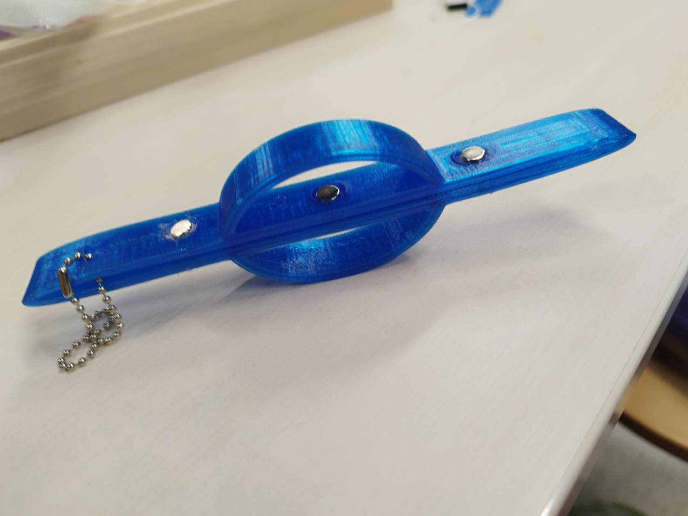

import 〇〇と入れると文字が灰色になる → その下でそのモジュールが使われてない（unused import statement）、そのままコードを書けば復活する
ウィジェットはKivyのGUIインタフェースに表示するもの（ラベルとかボタンetc…）のことです
ウィジェットはKivyのroot.childrenにリスト化して保持されています
リスト内のウィジェットを操作する場合は、以下のメソッドを使用します
add_widget(): リスト内に新しいウィジェットを追加
remove_widget(): リスト内からウィジェットを削除
clear_widgets(): リスト内のすべてのウィジェットを削除
bind関数と呼ばれます。Tkinterを活用する上で非常に大切な関数になります。
そもそもTkinterで使われるイベントとは?
Tkinterで使われるイベントとは、
Tkinterのアプリ内でボタンを選択する
Tkinterのアプリ内で文字を入力する
Tkinterのアプリ内でマウスを動かす
__init__とは、インスタンスを生成した際に、1番最初に呼び出される関数になります。
**kwargs: 複数のキーワード引数を辞書として受け取る
前のページに戻る